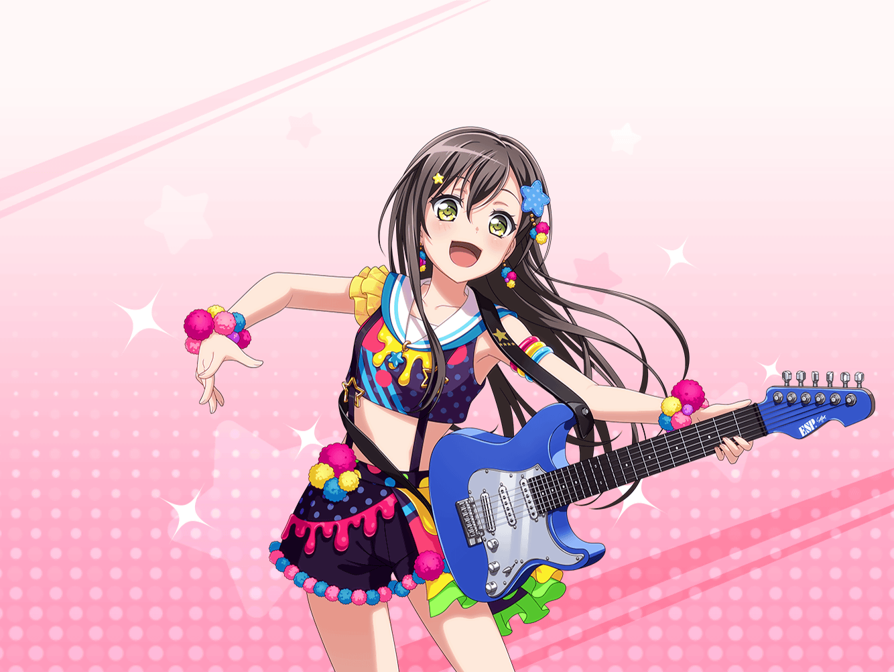

ショッピングモール
たえ
あ、{{userName}}さん、こんにちは
まりな
たえちゃん、私もいるよー
たえ
まりなさんもいたんですか？
どうもこんにちは！
たえ
……えっと私は、ギターケースに付けるアクセサリーを
探しに来たんだ
たえ
実は今度、ライブで着る新しい衣装ができあがって……
たえ
すっごくカラフルでかわいいから、それに合ったイメージの
アクセサリーをギターケースにつけたいな、って思って……
まりな
そうなんだ！
新しい衣装の写真とかないの？
たえちゃんが着てるところ、見てみたいんだけど
たえ
ありますよ。
えっと確か、携帯の中に写真があるはずだけど……
たえ
……あ、あった。
こんな感じ
まりな
わっ！ すっごいかわいく撮れてるね、この写真！
……キミも、そう思わない？
たえ
ありがとうございます！
まりな
けど、なかなかこの色味のアクセサリーって、
お店にはないかもね……
まりな
すごく個性的な色使いだもん、自分で作るなら別だけど……
たえ
あ、そうか。
なかったら自分で作ればいいんだ！
たえ
衣装のヘアアクセとか、有咲とりみが作ったし、
私もできると思う
たえ
あの、文房具屋さんってどこでしたっけ？
紙粘土と絵の具を買っていかないといけないんで
まりな
紙粘土と絵の具で作るつもりなんだ……？
な、なんか図工の授業みたいで、
た、楽しそうだね……？
たえ
たぶんかわいいのが完成すると思いますよ。
だって私、こういうの得意なんで
たえ
完成したら見せるんで、
まりなさんも{{userName}}さんも、楽しみにしててね